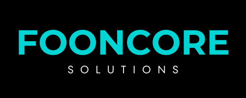

Cybersecurity Risk Assessment
Identify vulnerabilities that could expose your business to threats.

Fooncore SolutionsEDMONTON IT CONSULTING
Helping clinics, professional firms, and growing organizations secure systems, protect sensitive data, and improve technology reliability.
Based in Edmonton, we provide independent IT consulting to help small and medium-sized businesses improve security, reliability, and performance. With over 20 years of experience in IT infrastructure, network systems, and enterprise technology operations, we deliver practical expertise in cybersecurity, backup and disaster recovery, cloud security, and network consulting.
We work closely with clients to identify technology risks, strengthen system resilience, and ensure IT solutions support long-term business goals.
FOUNDER / LEADERSHIP
Tony is an IT professional with 20+ years of experience in enterprise technology. He held senior IT roles supporting regional and global operations for commercial companies.
He now focuses on helping Edmonton businesses strengthen their IT environment with practical, secure, and cost-effective solutions.
02 / PURPOSE
Deliver reliable, secure, and cost-effective IT solutions that help small and medium-sized businesses grow while minimizing technology risks.
03 / DIRECTION
Become a trusted technology advisor for organizations without dedicated IT leadership, providing practical expertise to build secure, resilient, and future-ready technology environments.
04 / OUR APPROACH
05 / CORE SERVICES
Identify vulnerabilities that could expose your business to threats.
Guidance on network architecture, system design, and technology planning.
Protect critical business data and ensure recovery capability.
Migrate on-premises systems to the cloud for secure remote work, improved teamwork, and lower infrastructure costs.
Oversight and advice to ensure outsourced IT providers deliver secure, reliable services.
06 / WHY FOONCORE
07 / INDUSTRIES WE SERVE
Protect patient data, improve reliability, and support compliance.
Secure client information for accounting, legal, and consulting firms.
Safeguard project data and remote access systems.
Build reliable, secure IT environments for growth.
FREE 30-MINUTE CONSULTATION
Discuss your IT and cybersecurity needs with an experienced consultant and receive practical recommendations to improve your technology environment.
Schedule Your Consultation →Replace hello@fooncore.com with your preferred business email before publishing.